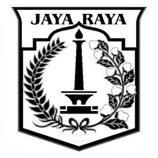

PEMERINTAH PROVISI DAERAH KHUSUS IBU KOTA JAKARTA
DINAS PENDIDIKAN
Jalan Jenderal Gatot Subroto Kavling 40-41
Telepon : 5204095,5204087,5204039,5271424,5271472
Faximile : 5271423,5204039,5271424
J A K A R T A
Kode Pos 12950
| Nomor |
: |
43/SE/2013 |
| Sifat |
: |
Penting |
| Lampiran |
: |
... |
| Hal |
: |
Perpisahan Peserta Didik |
Yth, Kepala TK, SD, SMP, SMA, dan SMK
di lingkungan Dinas Pendidikan
Provinsi DKI Jakarta
di Jakarta
SURAT EDARAN
Sehubungan dengan akan berakhirnya tahun pelajaran 2012/2013, saya minta
perhatian Saudara akan hal-hal
sebagai berikut:
- Bagi peserta didik SMA/SMK kelas XII yang akan melanjutkan ke perguruan
tinggi agar mmepersiapakan
diri setelah menempuh ujian nasional;
- Bagi peserta didik TK/SD/SMP yang akan melanjutkan ke jenjang yang lebih
tinggi agar mengikuti
ketentuan yang telah ada dalam penerimaan peserta didik
baru;
- Pelaksanaan Perpisahan :
- untuk menjalin dan mempererat tali silaturahmi antara peserta didik, sekolah
dan orang tua/wali
peserta didik, pelaksanaan perpisahan dengan
memperhatikan azas efisiensi agar bertempat di
sekolah serta mengundang
orang tua
peserta didik;
- tidak memberatkan peserta didik dalam biaya
- Berkoordinasi dengan aparat terkait.
Atas perhatian Saudara, saya ucapkan terima kasih.
KEPALA DINAS PENDIDIKAN
PROVINSI DAERAH KHUSUS IBUKOTA JKAARTA,
Ttd
Dr.H. TAUFIK YUDI
MULYANTO,M.Pd
NIP 196111091987031005
tembusan:
- Wakil Kepala Dinas Pendidikan,
- Sekertaris dinas pendidikan,
- para kepala bidang di lingkungan dinas pendidikan,
- para kepala sudin pendidikan dasar / menengah kota administrasi,
- kepala sudin pendidikan kab. adm. kep. seribu,
- para kepala seksi dikdas/dikmen kecamatan,
- para pengawas TK/SD, SMP, SMA, SMK dan PLB